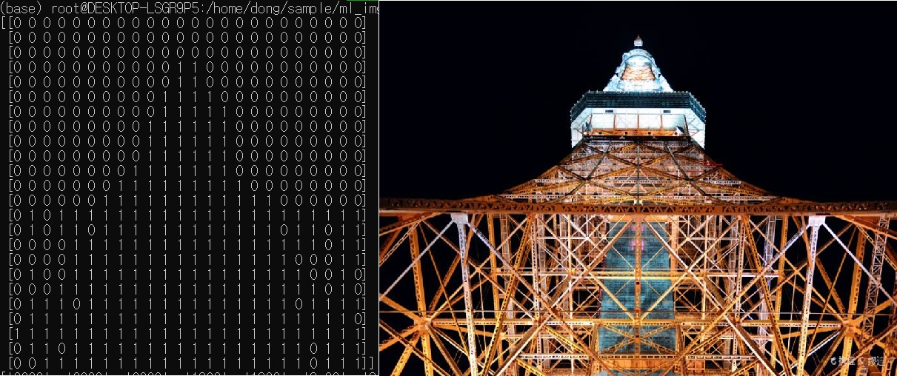

파이썬 이미지 처리
코드 :
깃허브 이미지 처리 레포지토리
1. 사용 라이브러리
이미지 검출하기 : Pillow, numpyCNN 이미지 분류 : scikit-learn, keras, numpy, Pillow
OpenCV 얼굴 인식 : OpenCV
이미지 OCR-연속된 문자 인식 : OpenCV, keras, numpy, Pillow
2. 개발 환경
os : windows 10 Provirtual-env : Ubuntu, anaconda3
language : python 3.6
IDE : pycharm
package : scikit-learn, keras, OpenCV, numpy, Pillow
3. 이미지 검출하기
Average Hash를 통해서 유사 이미지를 찾아보겠습니다.Average Hash는 이미지의 픽셀 값이 평균 이상이면 1, 평균 이하면 0일 출력하게 됩니다.

위 사진처럼 1과 0으로 이미지의 형태를 대략적으로 구할 수 있습니다.
이러한 avg hash와 해밍거리(레벤슈타인 거리와 비슷하지만 해밍거리는 두개의 길이가 같아야함.)
를 이용하여 유사 이미지를 찾아보겠습니다.
의자 이미지와 유사한 이미지를 출력하면 다음과 같이 나옵니다.
정확도가 낮아 다른 이미지도 같이 나옵니다.
4. CNN 이미지 분류
CNN은 합성곱 신경망으로 효율적인 딥러닝 방법 중 하나입니다.이번에는 5개 분류의 총 337장의 이미지를 분류해 보겠습니다.
의자, 카메라, 나비, 코끼리, 플라밍고 5가지의 이미지를 분류해 보겠습니다.
CNN으로 분류를 학습하였을때 정답률이 87%가 나왔습니다.
이 모델을 가지고 분류를 하고 오답인 이미지를 저장하면
31개의 오답인 이미지가 출력 되었습니다.
아쉬운 수치이지만 데이터가 부족하여 그런 것이므로
나중에 더 많은 데이터로 학습하면 정답률이 올라갈것입니다.
5. OpenCV 얼굴 인식
OpenCV의 캐스캐이드 파일을 이용해 얼굴 인식을 하겠습니다.얼굴을 인식하여 경계선을 만들었습니다.
얼굴을 인식하였으니 얼굴을 모자이크 처리 해보겠습니다.

모자이크 처리가 완료 되고 하나의 얼굴 뿐만 아니라 두개 이상의 얼굴도 모자이크 처리가 가능합니다.